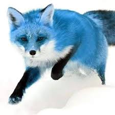

Evolución en el Ártico
El zorro azul es una variante genética del *Vulpes lagopus*. A diferencia de la mayoría de los zorros árticos que se vuelven blancos en invierno, esta subespecie mantiene su tono gris azulado durante todo el año.

El zorro azul es una variante genética del *Vulpes lagopus*. A diferencia de la mayoría de los zorros árticos que se vuelven blancos en invierno, esta subespecie mantiene su tono gris azulado durante todo el año.

Históricamente, estos animales han habitado las zonas costeras de Islandia, Groenlandia y Svalbard, donde su color les servía de camuflaje entre las rocas oscuras de la costa.
Puedes aprender más sobre su conservación en estos sitios oficiales: